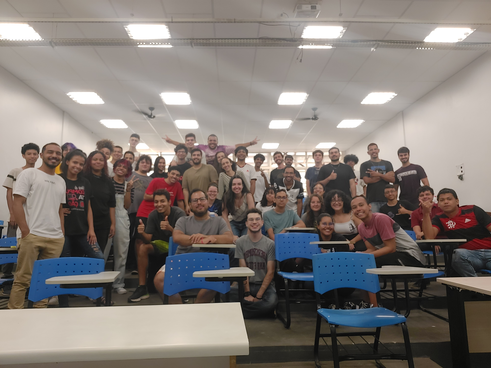
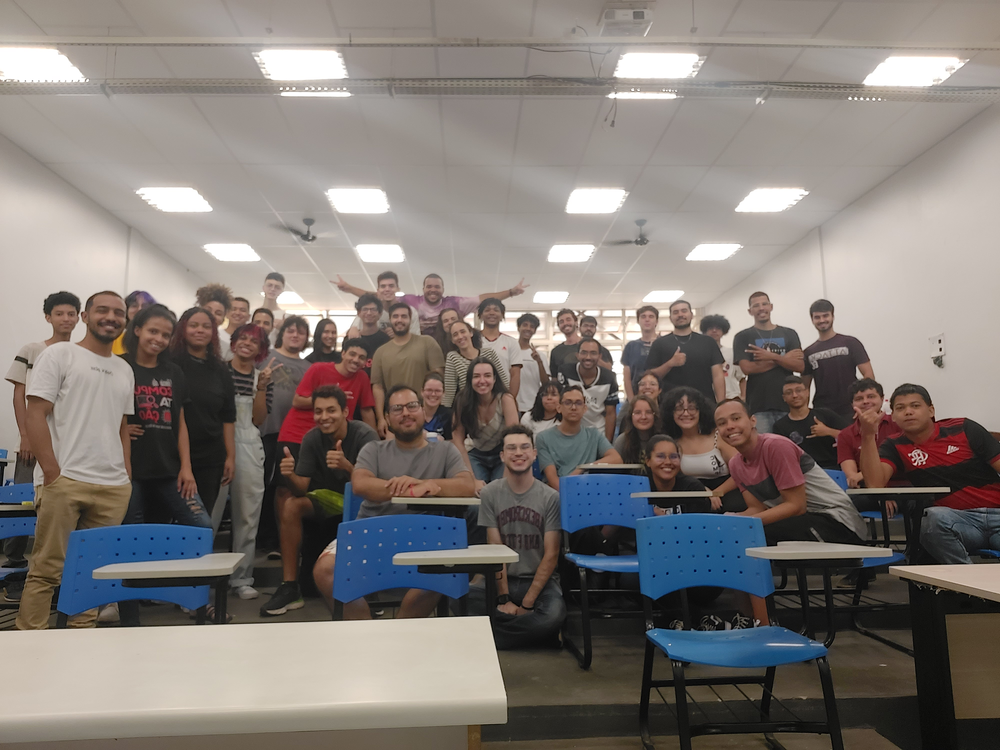

Sobre
Crio soluções inovadoras do zero, unindo software, arte e eletrônica em experiências interativas aplicadas à saúde. 😊

Desenvolvedora de Jogos Interativos & Engenheira Criativa.
Trabalho na pesquisa e desenvolvimento de jogos, dispositivos vestíveis e sistemas interativos para saúde, unindo engenharia, arte e eletrônica aplicada. Atuo como pesquisadora, desenvolvedora, artista e maker, criando experiências inovadoras que integram games, visão computacional e sensores de movimento. Também possuo experiência em docência no ensino superior, dedicando-me a transferir conhecimento e inspirar novos profissionais nas áreas de tecnologia e inovação.
- Nascimento: 1995
- Cidade: Uberlândia, MG
- Lattes: Link
- E-mail: julia.tannus@ufu.br
- Titulação: Doutorado em andamento
- ORCID: Link
Domino cada etapa do processo: do conceito à prototipagem de jogos e eletrônicos, explorando novas formas de interação e inovação entre o corpo e o ambiente digital.
Alunos de graduação
Bolsas de agências de fomento
Artigos em Revistas com JCR acima de 2.6
Anos de Experiência em pesquisa acadêmica
Habilidades
Experiência em desenvolvimento de software, modelagem 3D, eletrônica e prototipagem.
Linguagens de Programação
Ferramentas e Softwares
Resumo
Confira minha trajetória acadêmica e profissional! 🙌
Formação Acadêmica
Doutorado em Engenharia Elétrica
2022 - Atual
Universidade Federal de Uberlândia (UFU)
Orientador: Eduardo Lázaro Martins Naves. Bolsista CAPES. Pesquisa sobre avaliação clínica do paciente durante o uso de um jogo de Realidade Virtual para reabilitação.
Mestrado em Engenharia Elétrica
2019 - 2021
Universidade Federal de Uberlândia (UFU)
Título: "Free to Fly": Development and evaluation of a novel exergame with a low-cost 3D tracking method for post-stroke rehabilitation. Orientador: Edgard Afonso Lamounier Júnior. Coorientador: Eduardo Lázaro Martins Naves. Bolsista CNPq. Prêmio de Melhor Dissertação de Mestrado de 2021 pelo PPGEELT/UFU.
Graduação em Engenharia de Computação
2014 - 2019
Universidade Federal de Uberlândia (UFU)
Título: Jogo Sério baseado em Realidade Virtual para reabilitação de indivíduos com paresia de membro superior decorrente de Acidente Vascular Encefálico (AVE). Orientador: Edgard Afonso Lamounier Júnior. Bolsista CNPq.
Experiência Profissional
Senior Developer
2024 - Atual
Reabnet Tecnologia
- Startup derivada dos trabalhos do Núcleo de Tecnologias Assistivas (NTA-UFU). Bolsista FINEP.
- Desenvolvimento de jogos para telerreabilitação com foco em recuperação motora e cognitiva.
- Implementação de sistemas de captura de movimento e visão computacional para detecção de poses e interação.
Professora Substituta
2022 - 2024
Faculdade de Computação - Universidade Federal de Uberlândia (UFU)
- Ministrou disciplinas de Programação Funcional, Redes de Computadores e Sistemas Digitais.
- Atuou nos cursos de graduação em Ciência da Computação e Sistemas de Informação.
- Orientou projetos de Iniciação Científica nas áreas de visão computacional e reabilitação.
- Participou de bancas de Trabalho de Conclusão de Curso.
Portfólio
Alguns dos meus trabalhos selecionados ao longo dos anos. 🎨
- Tudo
- Modelos 3D
- Hardware
- Jogos
- Aulas
- Artigos
{kind=link}
{kind=link}
{kind=link}